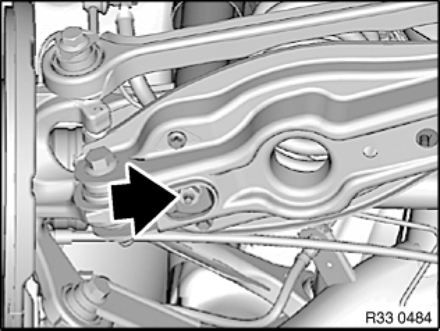
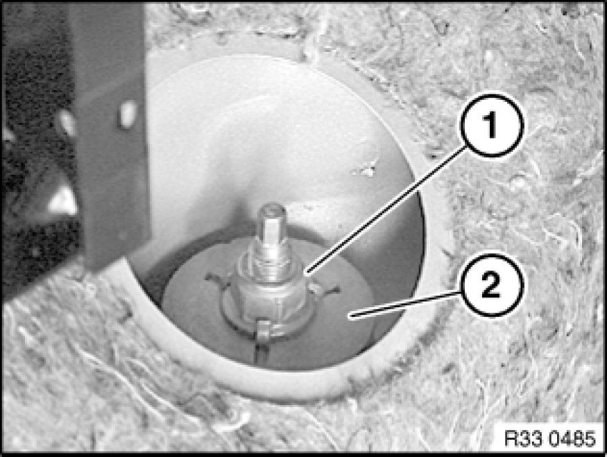
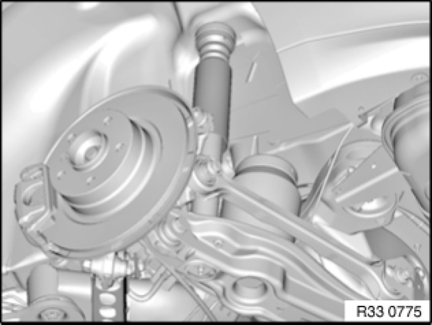
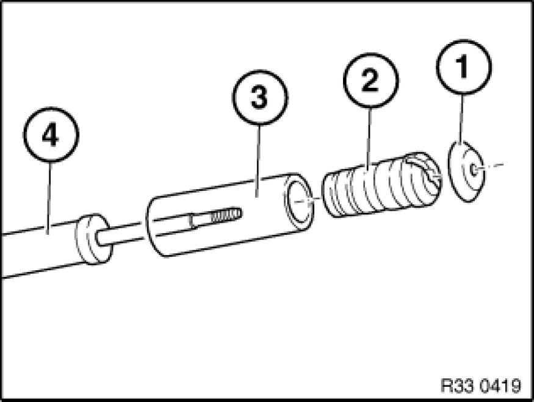

33 52 000 Removing and Installing/Replacing Rear Left or Right Shock Absorber
33 52 000 - Removing and installing/replacing rear left or right shock absorber

Warning!
Danger to life!
Car may tilt off lifting platform if the workshop jack is incorrectly handled.
After supporting components, make sure that:
- the vehicle can no longer be raised or lowered
- the vehicle does not lift off the locating plates on the lifting platform

Necessary preliminary tasks:
- Remove rear wheel 36 10 300 Removing or Installing Front or Rear Wheel
- Remove luggage compartment wheel arch trim
Note:
Read and comply with Information on replacing shock absorbers [1][2]31 00 ... Information on Replacing Shock Absorbers.

Support wheel carrier with workshop jack.
Release nut; if necessary brace on hex head.
Raise wheel carrier with workshop jack until shock absorber can be removed from rubber mount.
Press shock absorber together and remove from rubber mount.
Slowly lower wheel carrier until wheel carrier is suspended.
Remove workshop jack underneath car and lower car.
Installation Note:
Replace self-locking nut.
Tightening torque 33 52 2AZ 33 52 Shock Absorbers (Rear).

E93: Remove cable duct.
Remove protective cap.
Release nut (1); if necessary, grip at hexagon head.
Remove support bearing upper section (2).
Installation Note:
Replace support bearing upper section (2).
Tightening torque 33 52 1AZ 33 52 Shock Absorbers (Rear).

Press shock absorber together and remove from wheel arch.
Installation Note:
Remove support bearing (lower section) 33 52 161 Replacing Rear Left or Right Thrust Bearing For Spring Strut/Shock Absorber, check for damage and if necessary replace.
Check auxiliary damper and protective tube for damage, replace if necessary.

Replacement:
- Remove support pot (1) and auxiliary damper (2) with protective tube (3) from rear shock absorber (4)